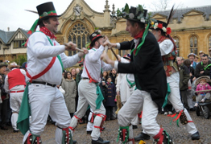
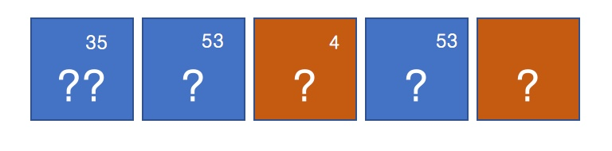
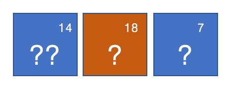

May Day
01-May-2017 | Milku
I think I'll celebrate Beltane instead as that comes with a feast.
Happy May Day!
At least my humans didn’t get up as early as some Oxonians to celebrate the arrival of Spring. Celebrations started in Oxford at 6am, with the Magdalen College choir singing “Hymnus Eucharisticus” from the Great Tower. That’s followed by the bells ringing out over the city for about 20 minutes. No sleeping in there. But there are compensations as bars and pubs are open. And you can watch the Morris Men dancing in Radcliffe Square, Catte Street and Broad Street.
No dancing or alcoholic beverages here...maybe later...

Do you fancy another little challenge? I’ve written my human friends’ names using chemical element symbols. Can you guess what they’re called?
If the square is blue, then it’s the current symbol that I’ve used. If it’s an burnt orange colour – well it is on my screen – then the symbol is discontinued. Give me a break...I couldn't find current symbols to suit all the letters I wanted. A hamster treat to the person who guesses all the names correctly. Click on the image to see the answer.
The last symbol (letter) doesn't have an atomic number because it isn't actually a single element although Carl Mosander thought it was in 1841. In 1879, Lecoq de Boisbaudran isolated samarium from this material. Then in 1885, Carl Auer von Welsbach separated out the other component elements, which were soon named praseodymium and neodymium.
Did you get it right? How about another one?
I have got 3 little human friends so you might as well find out the name of the third one. OK?